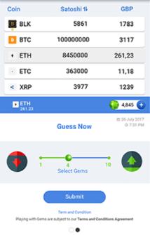

5. Business Scenario & Design
5.1 Business Scenario
We have many different ways to circulate the TokenTrend online, in addition to being circulated on exchanges, it can also be circulated on our website. We are building a web platform by an excellent and professional IT development team lead by one software principle and two software expert engineers. There are several excited modules designed on this platform which provide holders a lot of features can be enjoyed and circulate the TokenTrend.
Feature1: The entertainment module, including quiz feature, index feature, etc.
We will setup a lot of entertainment features in this module, like the quiz of the trend of real cryptocurrencies. Holders can use their trillionaire coins to have some fun as well as some benefits with these features. There will be a ranking board shows who are the best players in this module, since the trend we get is the real data from exchange, so the rank can show the true level of these top players, that makes their sharing and comments in our community module can guide other holders about the trend of real cryptocurrencies.
We guarantee that there will be absolutely NO fee in this module, that means when holders enjoy here, it is a win-win business model without any extra burden that have to take.



Feature2: The virtual transaction.
Most of people in the cryptocurrency world checks the price of the currencies through applications, usually Coin Ticker, Blockfolio or similar. While none of these applications provide accurate information on what to invest, they merely allow to track the market status or your portfolio value.
We also know that almost everyone in the community (whether a crypto trader, a miner, a small investor or a big whale) spends a lot of time, experience, and even luck to look up for investment hints and clues from resources such as blogs, twitter, slack communities, troll boxes and coinmarketcap.com.
For these pain points, we design the virtual market module, holders can operate the cryptocurrencies like what they do in the real exchange in this module, the different is that, the TokenTrend will be used instead of other kind of cryptocurrencies.
With this excited feature, holders can practice and simulate this transaction here to verify their judgment on the cryptocurrencies with the opportunity to win more of TokenTrend at the same time.
There will be a corresponding leaderboard list in this module shows that starts who have won the most coins, they can express their views on the trend in our community module as well, all the holders can take the benefits of their ideas since almost everyone on our website can browser all public sharing like what they do on Twitter or something, the different is that, this community is only built for the currency circle, and everyone has a clear vison of strong players since they can fetch all this information simply through our virtual market’s ranking board.

Feature3: The AI Trend Forecast module.
We have strong AI technical support to realize trend forecast. Our virtual currency will be used as the circulation currency of this module. Holders can get information which AI generated to instruct their trading.
Feature4: The AI Index module.
We will collect data from media, community and portal, with the semantic analysis we will provide Sentiment Index. User can use this data for exchange reference. And we will provide this index to customer for Trend Token holders for free.
Feature5: The AI News Feed module.
We will collect latest news from website and chose the most important ones with our AI robot and then push to our customer. This service is provided to Trend Token holder only for free.
Feature6: The online community module.
The main mission of trillionaire coin’s community is to bring together the like-minded people to support each other and environmental protection worldwide. Holders will join the community and share their opinions in terms of cryptocurrency and environmental protection. With the interaction with other two modules, which are Quiz module and Virtual transaction module, holders can follow top players in these two modules where can show their true professional levels, that may bring a lot of benefits to almost everyone.

5.2 System Design
We design a Four-layer structure to ensure the high reliability, scability, and integrity of the whole system, as well as the high security of all necessary data. As a result, we provide customers an efficient and trustable platform.
- Network Layer: As the basic foundation of the TrendToken cross-chain token, we will aggregate high-quality public chains and DeFi ecological systems based on these chains. This includes Ethereum, Binance Smart Chain and Huobi Chain to provide cross-chain trading.
- Visualization Layer: We developed multiple visualized website layer with the most rigorous authentication methodology of blockchain to ensure the safety of users.
- Application Layer: We put 2 load balancer clusters in front of components which distribute network traffic and workloads across 2 computing clusters, which increase the availability and fault tolerance of whole system. We build 2 application clusters to further ensure the stability and throughput of the system.
Data layer: We use database to store necessary data so all the transaction and other activity data can be tracking and reused. We use Redis cluster as the cache layer and ES cluster to enhance the response efficiency and improve the protection of the database. For the data in Solidity, we isolate the data layer and logic layer so that the code in Sol can be updated and maintained easily in the future.